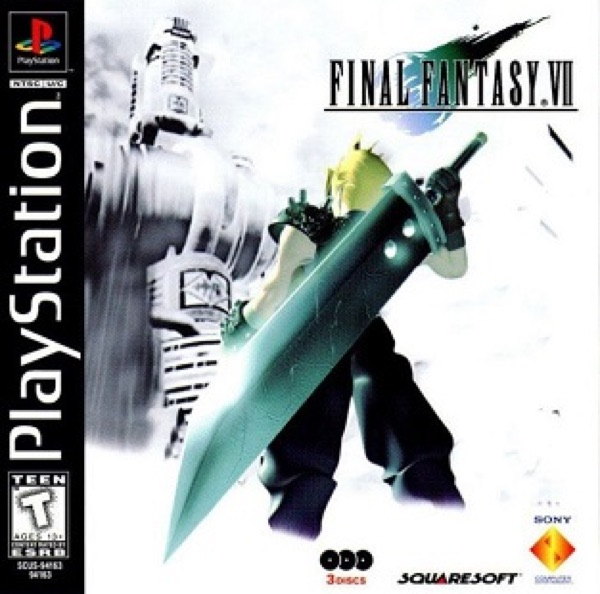

RPG · 1997
Final Fantasy VII
Pre-rendered spectacle that made turn-based RPGs mainstream in the West.

Cover: Wikipedia: Final Fantasy VII
Facts
- Released
- 1997-01-31
- Genre
- JRPG
- Category
- RPG
- Platforms
- Mobile, Nintendo, PC, PlayStation
- Developers
- Square
- Publishers
- Square, Square Enix